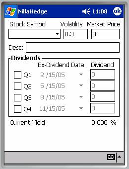
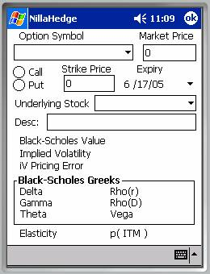
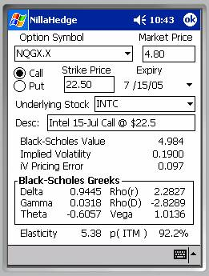

Instrument Definition Dialogs

Stock Definition DialogThe Stock Definition Dialog includes controls for entering a stock symbol, the stock’s volatility, its current market price, a brief description, and a number of controls supporting quarterly dividends.
Stock Symbol
Refer to the Symbol / Identifier discussion in the Instrument Definitions section above.
Volatility
If you never intend to analyze options on a particular stock, then volatility can be ignored because it’s only used to price and analyze options derived from the stock. However, if you are interested in analyzing options on a stock, you should know a couple of things. First, many sources of volatility report the volatility as a percentage, e.g. if the volatility is 0.391, they may report 39.1%. NillaHedge expects volatility to be the un-scaled floating point value, not the percentage. An excellent source for volatility values (reported as percentages) is Robert's Historical Stock Volatilities.[1]
 Dividends
Dividends
The stock price obviously affects the capital value of your portfolio, and dividends are a motive force behind income reporting (elsewhere in NillaHedge). If you’ve done any amount of income investing, you will have discovered that there can be several weeks between the ex-dividend date and the issue date for the dividend check, but NillaHedge only has only one set of dates and uses the ex-dividend date for both purposes.
There are several justifications for this simplification. First, option valuation is driven by the ex-dividend date not the payment date. Second, capturing eight dates associated with dividends would substantially complicate the Stock Definition Dialog and pose a greater data entry burden on the user. Finally, given the limited storage capabilities of the typical PocketPC, storing just four dates instead of eight, saves storage space. The side effect is that the current yield may be affected. It will usually be inconsequential.
You’ll note that the date picker controls in the Stock Definition Dialog can specify years as well as months and the day of the month. NillaHedge assumes that dividends recur annually on the given calendar date, ignoring the year specified. Each of the four dividend date pickers is restricted to the months in the associated calendar quarter. If a stock pays dividends just once per year, in May, the only place you can successfully specify the date is in the date picker immediately to the right of the Q2 checkbox. You’ll also find that the dividend date picker and dividend amount for the Q2 dividend are disabled while the associated quarterly checkbox is not checked. Once you check the checkbox, the date picker and dividend amount controls are enabled. If you later desire to experiment with the effects of discontinuing the dividend, you need only disable the checkbox for the associated dividend and save the modified stock definition back to the database. The ex-dividend date and the dividend amount are retained in the database, but that dividend is excluded from all subsequent income calculations. At the end of the experiment, you can simply re-check the Q2 checkbox and re-save the stock definition.
Current Yield
When a stock price and one or more quarterly dividends are defined, the dialog will report the current yield of the dividends as a percentage of the stock price.
Definition dependencies
Since vanilla put and call options refer to an underlying stock, you may wonder if you must create a stock definition before creating an option definition which refers to it. The answer is no. If a stock definition does not exist at the time that an option definition referring to it is saved, a placeholder stock definition will be created for you. It will be up to you to enter appropriate values for the market price, volatility, dividends, and description, if any. The Stock Definition Dialog is the only place where you can enter a description, dividend dates and amounts for a stock, but the Option Analyzer also allows you to modify the stock price and volatility for an option’s underlying stock. Additionally, the Option Chain Retriever will automatically update the stock price whenever it successfully retrieves an option chain for a particular stock.

Option Definition DialogThe Option Definition Dialog is one of two ways to create an option definition in NillaHedge. The other is to use the Option Chain Retriever to save one of the options displayed in its options list, but we’ll get to that later. To define an option from scratch, you’ll need the option’s symbol, as well as its market price, strike price, expiration date, underlying stock symbol, and of course whether it’s a put or a call.
Option Symbol
Refer to the Symbol / Identifier discussion in the Instrument Definitions section.
Automated price updates depend on internet sources which catalogue pricing information using exchange registered symbols. No confirmation option allows you to interfere with option price updates, so it’s imperative that you stick with the exchange registered option symbols.
Market Price & Strike Price
Market price and strike price  are currency denominated
values.
are currency denominated
values.
Expiry
The Expiry date picker captures the option’s expiration date. The vast majority of stock options expire on the third Friday of the month (technically the third Saturday, but the exchanges are closed on Saturdays), so the convention is to say they expire on the third Friday. Be careful to specify the correct date. One could argue that the day of the month in the expiry date is superfluous because options always (effectively) expire on the third Friday so you’d be right insofar as exchange registered issues go. However, since the Option Chain Retriever will automatically save exchange traded options directly into the database, including the exact expiration date, we decided to leave exact date flexibility in the Option Definition Dialog. Unfortunately, with that flexibility you also get the burden of accurately specifying the expiry date each time you define an option manually. Sorry about that.
Put / Call
The Put / Call radio button pair is technically a tri-state. It is initialized to an undefined state, which prevents analysis, forcing you to choose a valid value. You might ask, why not just pre-select Call as the default value

and save the user from a pen-click, half of the time? Well, it’s because an invalid default value forces the user to proactively select a valid value, thus minimizing the potential of defining an option with an incorrect Put/Call value as an oversight.Underlying Stock
The Underlying Stock is a combo-box control, so you can either type the stock symbol or pick it from a list of stock symbols already defined in the database. If the specified stock doesn’t already exist in the database or it has zero volatility or zero market value, analysis will be disabled, resulting in a display like the one on the previous page.
However, if there is an underlying stock defined in the database with positive market value and positive volatility, the option can be analyzed, producing analytical results like those at right.
All of the analytical information presented below the description field also appears in the Option Analyzer. Please refer to the Glossary and the section on the Option Analyzer to learn more about implied volatility, Black-Scholes value and greeks, elasticity, and the probability of being in the money, p(ITM).